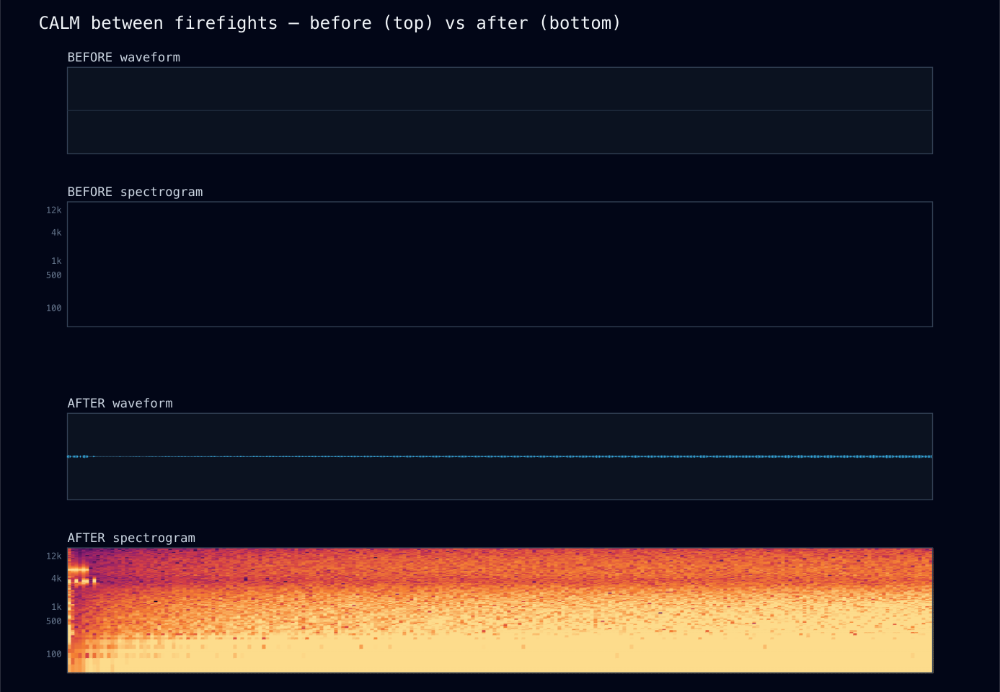
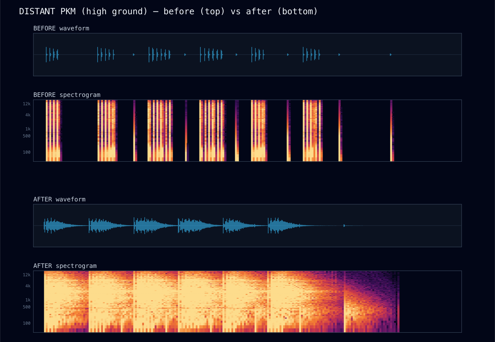
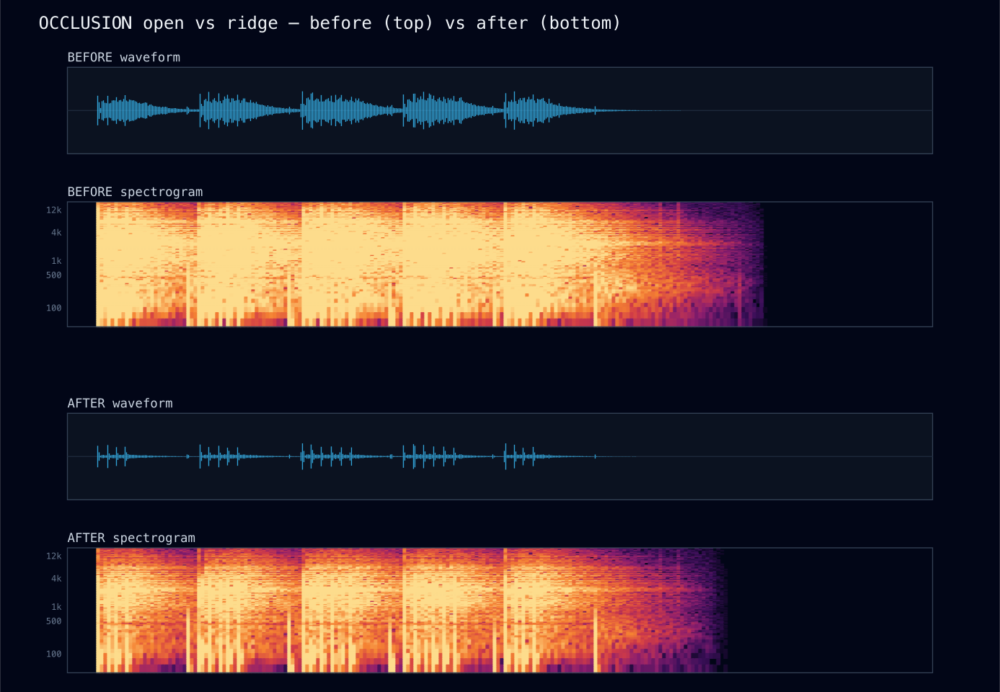
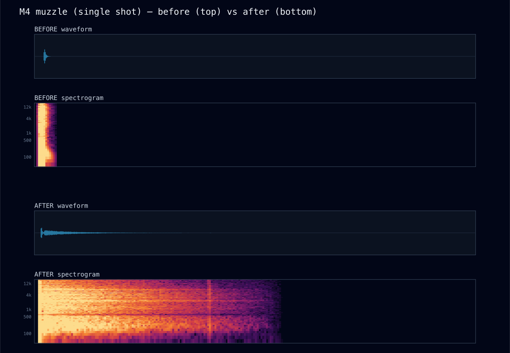

The Valley Found Its Voice
A research-driven rebuild of the game's procedural soundscape — from a combat-only, essentially mono mix with no reverb and silence between firefights, to a living Korengal valley: a canyon that echoes, a wind-and-water bed that makes silence tense, terrain that muffles fire behind a ridge, and weapons whose timbre tells you who's shooting. Every claim below is a number from an offline render of the real synthesis code, and an audio clip you can play.
The bar, and the gap
The success condition for this project is literal: a skeptical soldier plays it and says "holy shit, an AI built this?" Sound is half of immersion, and on HEAD it was the weakest half. The old system was a solid spine — ~17 procedurally-synthesized combat cues — but the offline oracle exposed three structural deficits the ear would just call "flat":
It was mono
L/R correlation was 1–1.0 on every sound — even a firefight with fire from the left flank and a ridge on the right (9.8% width). StereoPanner only changes level; the waveforms stayed identical, so nothing enveloped you.
It had no reverb
The defining sound of a Korengal firefight is the report rolling off the far ridge. There was none — every shot was a dry pop. (The "tail" the old metric saw was just synth decay.)
Silence was empty
Between firefights: −120 dBFS. Literal digital silence, which reads as "audio is broken," not "tense calm."
And it was uncontrolled
No master bus, no limiter, loudness drifting per event — and gunshots were 3 thin layers with no mechanical action, brass, or tail.
How it was built — research → design → implement → verify
Everything is 100% procedural (Web Audio only, zero audio-file assets — even the reverb impulse response is generated from decaying noise) and deterministic (same seed ⇒ same sound; the event→cue mapping is a pure function — proven by scripts/audio-probe.ts).
The signal chain
The whole upgrade is one idea applied everywhere: a small set of shared buses carrying a dry path plus a wet reverb send, glued by a master limiter. Two wins fall out for free — a stereo reverb impulse decorrelates the tail (fixing the mono mix), and a reverb send that rises with distance makes far events read as "distant," not just "quiet."
Before / after — see it, hear it
Each panel is an offline render of the real engine: waveform (top) + spectrogram (bottom), HEAD vs the new system. Press play to hear the same scene through both.





The numbers
How each piece works
Valley reverb — a canyon from pure noise
A shared ConvolverNode whose impulse response is generated, not recorded: exponentially-decaying stereo noise (Moorer's classic result) shaped by a highpass + an air-absorption lowpass that sweeps bright→dark across the tail, with 4 discrete "slap-taps" baked in at 0.18 / 0.42 / 0.85 / 1.4 s — the echoes off named cliff faces, panned to different walls. RT60 ≈ 1.8 s. The two channels use independent noise, so the tail is decorrelated — that's what gives the mix its width. Distance raises each cue's wet send; only the bright crack is fed in (the sub stays dry) so the tail rings without mud.
Ambient bed — geophony · biophony · anthrophony
A persistent voice bank: procedural wind (filtered noise, gust LFOs, weather-driven brightness), river (band-limited babble, notched to leave room for birds), the COP generator (additive diesel drone, distance-gated), and Poisson-scheduled birds / insects / dogs / call-to-prayer — all keyed to the sim's real solarLight(), windVector(), weather and time. Layers occupy reserved frequency bands so they never turn to mud. On the contact rising edge the whole bed ducks ~85% in 0.4 s and exhales back over 12 s — the readable silence of the calm-before, made into an instrument.
HDR mix + ducking — somber by dynamics, not volume
The loudest current sound raises a floating window that quieter sounds duck beneath (and below the window, get culled) — so an IED makes the world go quiet around it rather than just louder. Radio ducks the ambient; heavy HE ducks everything. The result is a 23.1 dB swing from a held breath to a blast, with a brickwall limiter guaranteeing it never clips.
Spatialization — for a top-down listener
StereoPanner by screen position (HRTF would be wasted on an overhead camera), distance attenuation + air-absorption lowpass, the speed-of-sound crack→thump split (the ranging cue every soldier knows), an elevation brightness shelf (high-ground guns sit forward), and a terrain line-of-sight raycast that muffles fire behind a ridge.
How do you know it's real? (the verification)
Audio is normally judged by ear, which doesn't satisfy "no fix without a number." So the campaign is built on an offline oracle (scripts/audio-render.ts): it renders the actual synthesis + spatialization + bus graph through a headless OfflineAudioContext to PCM, and computes peak, K-weighted loudness, spectral centroid, stereo correlation, reverb tail and more — and writes a listenable .wav. Renders are seed-pinned so every A/B delta is real, not noise. It asserts the goals as pass/fail:
Then an adversarial reviewer re-read every file looking for lies. It confirmed determinism, layer purity, no leaks — and caught a real one: the oracle's voice counter only incremented, so the busy firefight was being measured on just its first 32 cues. That was fixed (proper voice retirement), the gain staging it had masked was corrected, and the firefight was re-measured honestly. It was also verified live in the browser: the full graph builds, the ambient bed plays at -40 dBFS during the calm, combat cues fire through the real AudioContext, zero console errors.
What we deliberately did not do (restraint logged)
- Beds stay diffuse. Wind and rain are intentionally near-mono (omnidirectional weather); only positional spot sounds — birds, dogs, the call-to-prayer — are panned to their bearing. The calm scene is therefore wide in character but not aggressively stereo, which is acoustically honest.
- The limiter is a safety net, not a maximizer. It's set conservative so the wide dynamic range survives — power comes from ducking the world quiet, never from squashing everything loud (the arcade failure mode the brief forbids).
- The oracle doesn't model the time-evolving mix (HDR window, ducking, voice-stealing) — those are verified live + by the firefight metrics; the oracle measures the static signal path that carries timbre/reverb/width/occlusion. This is stated, not hidden.
- tic_sting stays the only musical element — rare, gated to the contact rising edge. No score, no Hollywood stings.